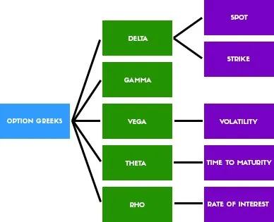

Understanding the Greeks
Now that you know the basics of options trading, you’re no doubt raring to
get started with your first trades. All that remains is to introduce you to
some of the strategies you now have open to you.
First up is the Greeks. You’re going to see of those all over the place and
they can really help you understand your chances with a particular trade, so,
it’s important to understand what they are.

Delta: Beginner options traders sometimes think when a stock
moves by $1 that the price of the options based on the stock will
also move $1. That’s not always the case.
Delta stands for the change in price of the option when compared
to the change in price of the underlying stock. For call options, it
will be between 0 and 1; for put options, it will be between 0 and
-1. The closer to 1 or -1, the more likely that the price of that
option will increase or decrease dollar for dollar as the stock
price changes. If it’s at 0.5 or -0.5, it will increase or decrease by
50 cents for every dollar of change on the stock. The further in
the money the option is, the higher its delta will be. The higher
the delta, the more likely your option is going to finish in the
money.
For example, if you own a call option on stock ABC with a
strike price of $60 and there are sixty days before expiration, the
stock is exactly $60. Since it is an at-the-money option, the delta
should be about .50. Let’s say the option is worth $5. So, in
theory, if the stock goes up to $61, then the option price should
go up from $5 to $5.50. If the stock continues to move higher,
delta will continue to rise.
What if the stock drops to $59 from $60? The options price will
drop to $1.50 from $2 and again reflecting the .50 delta of at-themoney options ($2–$1.50). If the stock keeps going down,
however, delta will continue to go down.
Gamma: That stands for the change in the delta of an option
relative to the change in the price of the underlying stock. It tells
you, therefore, what the rate of increase of the delta is. As a
buyer, a high gamma is good assuming that your assumptions
about what the underlying stock is going to do are correct. If
you’re wrong, it can be very bad indeed because your mistake is
going to work against you more quickly.
Theta: That stands for the change in the price of an option
relative to how much time is left until it expires. It is directly
related to the time value and will decrease as that value does.
You want a low theta risk with options more than 90 days before
expiration if you are long on your position because you don’t
want the time value to drop. You want a high theta if you are
short with options less than 30 days to deadline.
Vega: That stands for the change in price relative to the option’s
change in volatility. Premiums increase with volatility so vega
will, too. Specifically, it will tell you how every 1 percent point
change in the implied volatility affects the premium. If the
volatility drops or disappears altogether, it’s possible that your
option could lose value, so, vega is important to keep an eye on